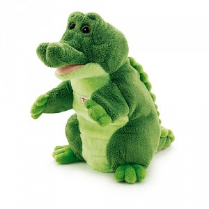

Мягкая игрушка на руку Крокодил
, 25 см

Краткое описание товара
Мягкий гипоаллергенный крокодил. Характер добрый. Не кусается
Характеристика товара
- Возраст: от 3 лет
- Тип: мягкая игрушка
- Цвет: зелёный
- Высота игрушки, см: 25
- Материал: текстиль
- Пол: для девочек, для мальчиков
- Упаковка: подарочная картонная коробка с ленточкой
- Вид мягкой игрушки: крокодил
| Характеристика | Описание |
| Страна производства | Россия |
| Уровень безопасности | Прошел сертификацию РосПотребНадзор |
| Оценка покупателей | 7 из 10 |
Подробное описание товара
Надев игрушку «Крокодил» на руку, вы сможете развлекать своего малыша. Вы так же сможете играть в кукольный театр, ставить моноспектакли, или приобрести еще одного персонажа и разыгрывать полноценные постановки. Игрушка такая мягкая и приятная на ощупь! Итальянский бренд Trudi — один из самых известных производителей качественных мягких игрушек, которые ценятся во всем мире. Порадуйте своего малыша, выбирая для него экологически-чистый продукт!